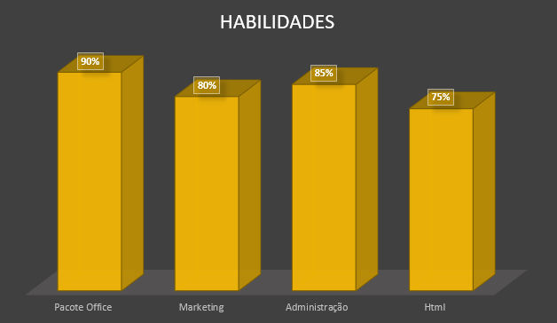

UNIBES
Capacitação Profissional (CEDESP) – Unibes (União Brasileiro-Israelita do Bem-Estar Social)
Gestão Administrativa e Rotina de Escritório
Período: Julho de 2025 – Dezembro de 2025.
Carga Horária: 600 horas.
→
Letramento Digital e Fluência em Dados: Participação ativa no programa Digilendo, desenvolvendo habilidades avançadas de leitura crítica, pesquisa digital e interpretação de informações no ambiente corporativo.
→
Desenvolvimento de Carreira: Capacitação através do programa Mentorela, com foco em autoconhecimento, inteligência emocional e planejamento estratégico para o mercado de trabalho.
→
Comunicação e Networking: Conhecimento atualizado sobre tendências do setor através da participação constante em palestras e workshops com profissionais de diversas áreas.
→
Soft Skills: Postura ética, facilidade de aprendizado, pontualidade e colaboração em ambientes dinâmicos.
